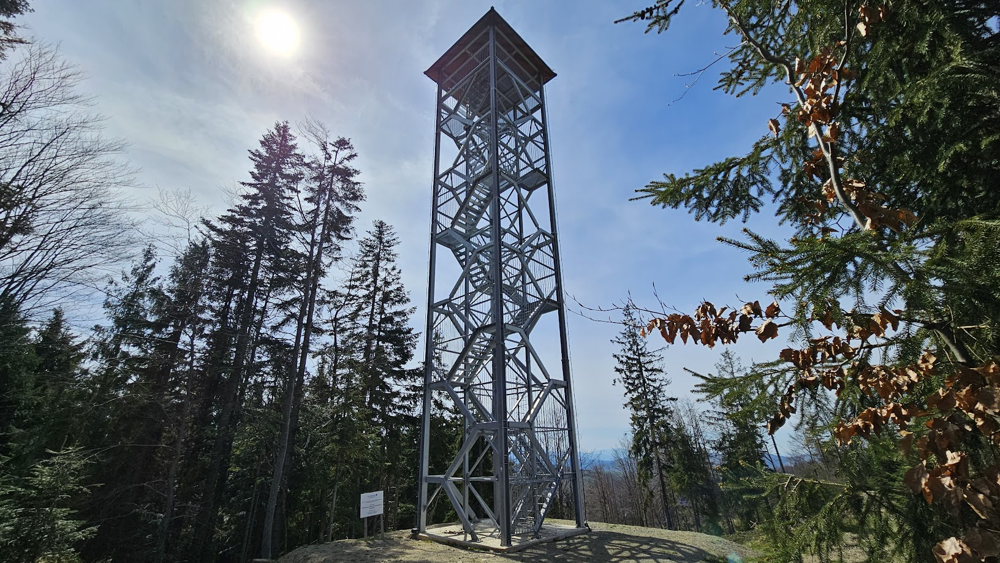
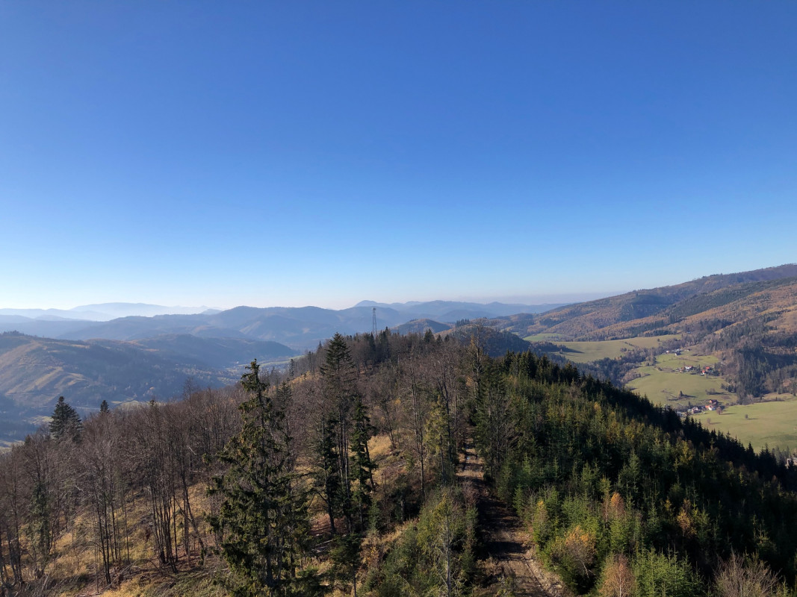
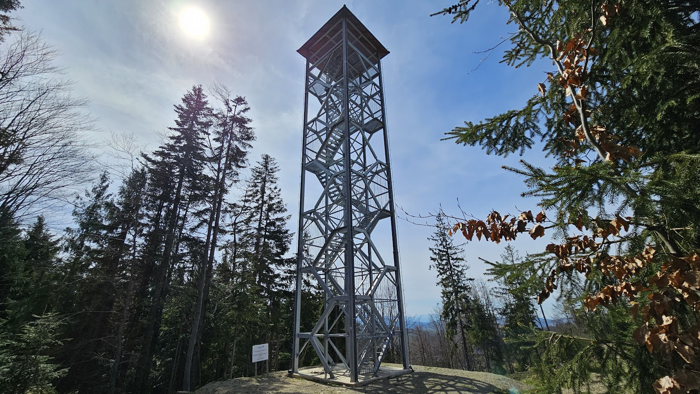
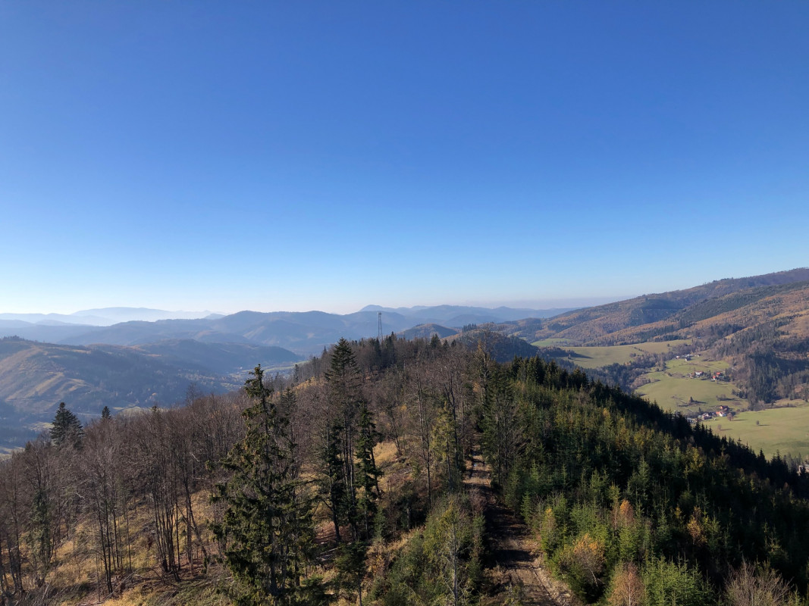
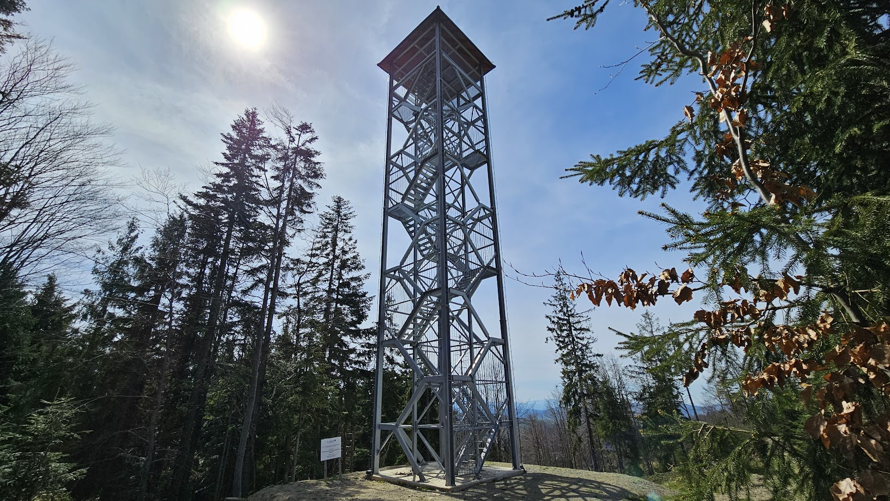
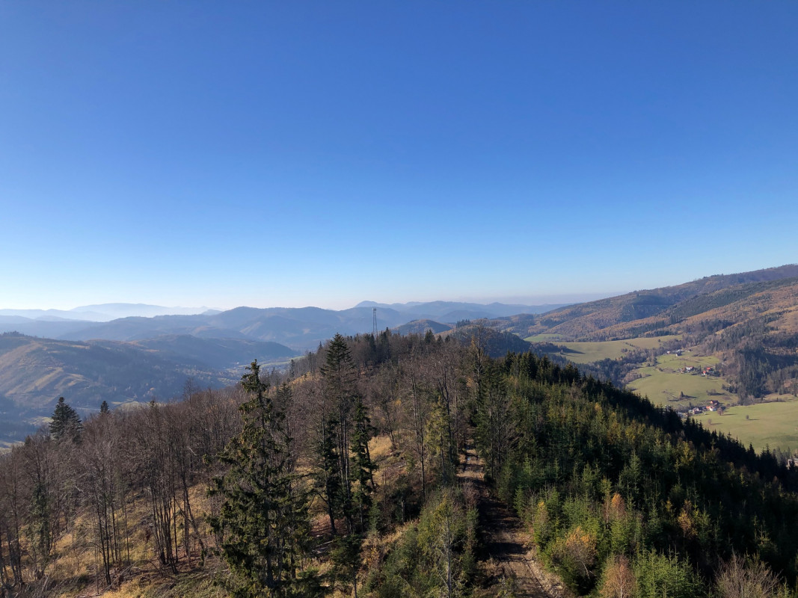

Galéria
  
 
Jedna z novších rozhľadní v regióne Kysuce sa týči nad obcou Nová Bystrica a je so svojou výškou 25 metrov najvyššou na Kysuciach. Táto stavba je postavená na vrchu Smrekovka. Rozhľadňa Nová Bystrica poskytuje fascinujúci pohľad na panorámu Kysúc a širšieho okolia. Samotná rozhľadňa je vybudovaná z pozinkovanej ocele a tým tak vytvára miesto, kde sa stretáva moderná architektúra s divočinou Kysúc, čo robí z tejto vysokej stavby skutočný zážitok pre všetkých návštevníkov. Pri dobrom počasí je z vrcholu vyhliadkovej veže pekne vidieť Kysucké Beskydy, Malú Fatru, Oravskú Maguru, Javorníky a Západné Tatry.
 
Tel.: 041/4397221
E-mail: info@novabystrica.sk